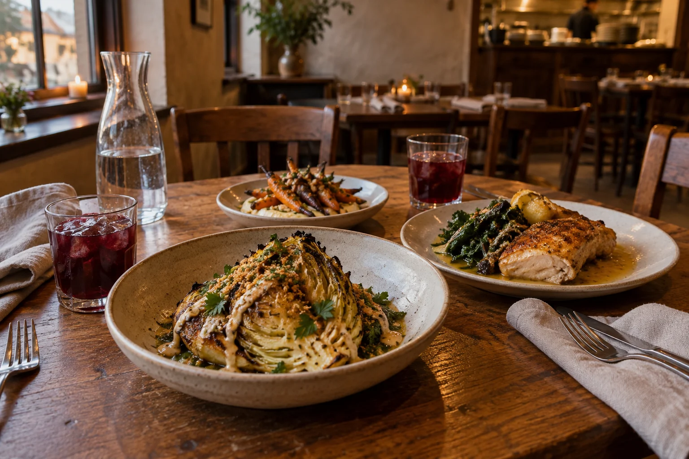
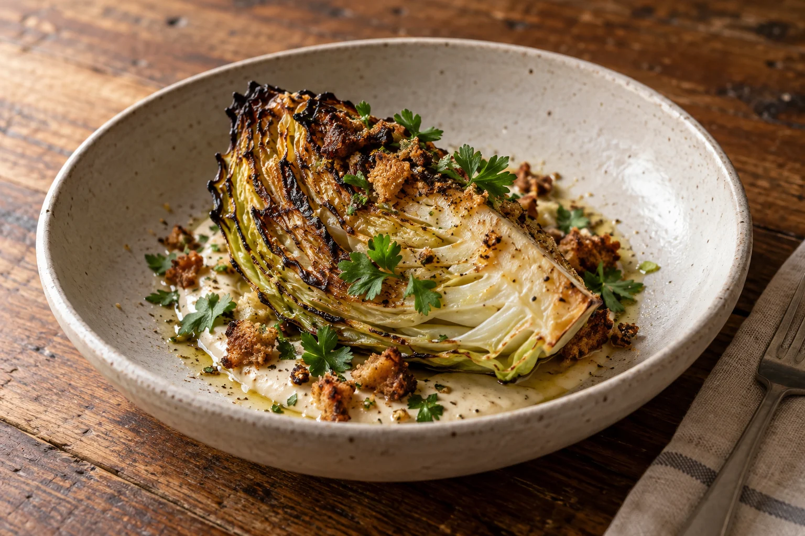

Neighbourhood cooking · Portland, Oregon
Ember Table

Come hungry. Stay a while.
Big on vegetables.
Easy around the edges.
We are a 28-seat neighbourhood restaurant built around the hearth. Cabbage gets charred. Carrots become the reason to order another plate. Chicken and trout have their place, too.
Share a few dishes, settle into the vegetarian set, or make a slow Sunday lunch of it. The menu is deliberately short so you can spend more time with the people across the table.
Read the whole menu
Fire-roasted cabbage · $18
Let the fire do its thing
A humble cabbage.
A very good start.
Dark edges, tender layers, bright cider dressing and a spoonful of lemon tahini. Finished with parsley and sourdough crumbs, for the bits worth chasing around the bowl.
Ingredients & the rest of the menuLet us make it three.
Carrots, mushroom & barley, poached pear. Our vegetarian set is $42 per person, with an optional $15 alcohol-free pairing.
See the set
An imagined corner of our dining room.
Dinner, and a Sunday lunch
A little room
to slow down.
- Dinner · Wed / Thu / Sun
- 5:30–9:30 pm
- Dinner · Fri / Sat
- 5:30–10 pm
- Sunday lunch
- Noon–2:30 pm
- Monday & Tuesday
- Kitchen closed
All times are local to Portland, Oregon.
Before you comeA small room. A good evening.